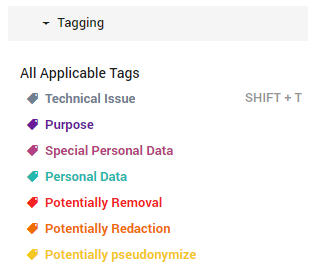
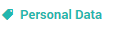
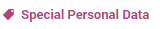
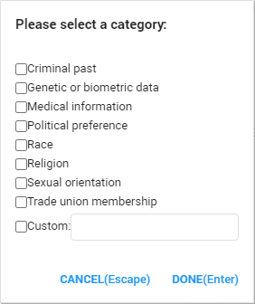
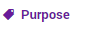
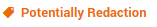
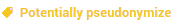
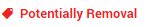
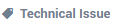

Tag
While searching the documents, it is important to remember to assign the appropriate tag to the document. For instance, if the document viewed has personal data in it, the Personal Data tag can be applied. Tagging documents can ensure correct categorization of the data. ZyLAB ONE makes the tagging of documents simple and clear.
All kinds of tags and subtags can be added to the ZyLAB ONE software, if necessary. For GDPR Compliance, there are the following, predefined tags:

After selecting a tag, it is possible that more subtags will appear. This prevents the Tagging interface from becoming too crowded. For instance, after selecting the Special Personal Data tag, more subtags like Medical information or Religion can be selected.
By default, the following tags can be found in ZyLAB ONE:
- Personal Data

This tag can be applied to all documents containing personal data.
- Special Personal Data

This tag can be applied to all documents that contain special category personal data. After applying the Special Personal Data tag, more subtags will appear to specify what kind of special personal data can be found inside the document. Custom tags can be added. The following categories will appear:
- Purpose

This tag can be applied in addition to the Personal Data Tag. The Purpose tag can be applied to tag the document with a legal ground, giving the reasoning why the document is being processed lawfully. After applying the Purpose tag, the following subtags will appear:

These subtags are based on the purposes for which personal data can be processed, as stated in article 6 of the GDPR.
- Potentially Redaction

This tag can be applied to a document of which the processing of personal data no longer is necessary, or there is no longer a legal ground for processing, and therefore should be redacted.
- Potentially Pseudonymize

This tag can be applied to a document that has a legal basis for processing of personal data, but the user only wants authorized members to view the personal data or pseudonymize the data for privacy safety.
- Potentially Removal

This tag can be applied to documents that are no longer relevant or not up-to-date. Please note that only authorized users can actually remove data from the ZyLAB ONE software.
- Technical Issue

This can be applied to a document that has a technical issue. After choosing this option, the following subtags can be applied:

Importantly, it is entirely up to the client to choose which kinds of personal data should be tagged as such. Personal data should be tagged in accordance with the goal in mind. For example, if an organization decides that it only wants to anonymize the Social Security Number in all their documents, then the organization should only tag documents with a Social Security Number. The same applies when an organization wants to anonymize all personal data; The organization should then tag all the documents containing all personal data, including names, emails, phone numbers etc.